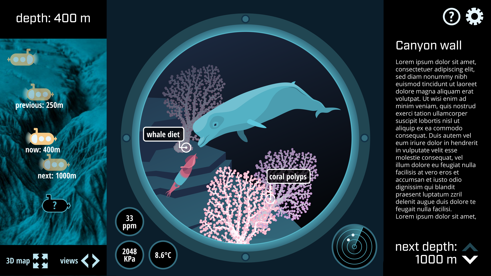

What is the Gully Deep Dive?
The Gully Deep Dive is an online educational resource for deep-sea biology and management, using the Gully Marine Protected Area as a case study. It is being developed by Molly Wells as part of her MSc in Biomedical Communications, as a year long project in visual science communication. Fisheries and Oceans Canada (Armand McFarland) and Ocean School (Emily Sheepy) are participating in the Gully Deep Dive as content advisors.
What will the Gully Deep Dive look like?
The Gully Deep Dive will be an interactive educational resource, accompanied by an activity plan. It is intended for use in a high school classroom (ex. Oceans 11), and will feature an interactive simulation of a submarine descending from the surface to the seafloor of the Gully canyon. Students will be able to control the depth level and click on views from the submarine cockpit for more in-depth information. After the dive, students will be presented with an activity based on the information they learned from the simulation.

What are the goals of the Gully Deep Dive?
1. Provide a holistic overview of the Gully
2. Clarify relationships of interconnectivity, spatial and temporal scales
3. Connect physical and biological characteristics and relationships
4. Align with NS provincial cirriculae